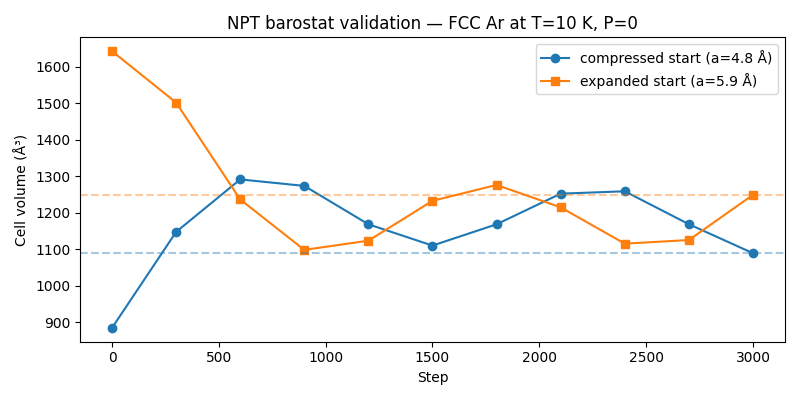

Note
Go to the end to download the full example code.
NPT Barostat Validation: Expansion and Contraction#
A clear test that the NPT barostat is working correctly: start two identical FCC argon crystals at different volumes — one compressed below equilibrium, one expanded above it — and run both under the same NPT conditions (T=10 K, P=0). The barostat must drive both toward the same zero-pressure equilibrium volume, one by expanding and one by contracting.
- Why FCC and not simple cubic?
The Lennard-Jones ground state is face-centred cubic (FCC). Simple cubic LJ is mechanically unstable: it has imaginary phonon branches and spontaneously collapses toward a close-packed structure during NPT dynamics. That collapse is not a barostat artefact, but using an unstable starting structure makes it hard to tell the two effects apart. FCC is the right structure to use when you want to isolate barostatic pressure equilibration.
- Why T=10 K?
At very low temperature the thermal fluctuations in both kinetic energy and cell volume are small. The dominant signal is then the pressure mismatch between the initial cell and P_target=0, making the convergence direction unambiguous. At higher T the same physics applies, but the volume trajectory is noisier.
- Expected result:
Compressed run (a = 4.8 Å): internal pressure > 0 → cell expands.
Expanded run (a = 5.9 Å): internal pressure < 0 → cell contracts.
Both final volumes converge near the zero-pressure FCC equilibrium (~1350–1450 ų for this 32-atom 2×2×2 supercell).
LJ argon parameters: ε = 0.0104 eV, σ = 3.40 Å, cutoff = 8.5 Å. Zero-pressure FCC equilibrium lattice constant: a_eq ≈ σ·2^(1/6)·√2 ≈ 5.40 Å.
import logging
import os
import torch
from nvalchemi.data import AtomicData, Batch
from nvalchemi.dynamics.base import DynamicsStage
from nvalchemi.dynamics.hooks import LoggingHook
from nvalchemi.dynamics.integrators.npt import NPT
from nvalchemi.hooks import NeighborListHook, WrapPeriodicHook
from nvalchemi.models.lj import LennardJonesModelWrapper
logging.basicConfig(level=logging.INFO)
LJ model with stress computation#
model = LennardJonesModelWrapper(
epsilon=0.0104, # eV
sigma=3.40, # Å
cutoff=8.5, # Å
)
# NPT requires stress computation — opt in (default is energy + forces only).
model.set_config("active_outputs", {"energy", "forces", "stress"})
model.eval()
LennardJonesModelWrapper(
outputs={energy, forces, stress}
pbc=[supports_pbc]
neighbors=(cutoff=8.5, format=matrix)
)
FCC crystal builder#
FCC has 4 atoms per cubic unit cell at fractional coordinates (0,0,0), (½,½,0), (½,0,½), (0,½,½). A 2×2×2 supercell gives 32 atoms. The zero-pressure LJ equilibrium is a_eq ≈ 2^(1/6)·σ·√2 ≈ 5.40 Å.
FCC_BASIS = [
(0.0, 0.0, 0.0),
(0.5, 0.5, 0.0),
(0.5, 0.0, 0.5),
(0.0, 0.5, 0.5),
]
N_SUPER = 2 # 2×2×2 supercell → 32 atoms
MASS_AR = 39.948 # amu
def make_fcc_batch(lattice_constant: float, seed_vel: int) -> Batch:
"""Return a Batch for an FCC argon 2×2×2 supercell at the given lattice constant."""
a = lattice_constant
coords = []
for ix in range(N_SUPER):
for iy in range(N_SUPER):
for iz in range(N_SUPER):
for bx, by, bz in FCC_BASIS:
coords.append([(ix + bx) * a, (iy + by) * a, (iz + bz) * a]) # noqa: PERF401
n_atoms = len(coords) # 32
positions = torch.tensor(coords, dtype=torch.float32)
box = N_SUPER * a
cell = torch.eye(3, dtype=torch.float32).unsqueeze(0) * box
KB_EV = 8.617333e-5 # eV/K
TEMPERATURE = 10.0 # K — low T so thermal noise is small
kT = TEMPERATURE * KB_EV
g = torch.Generator()
g.manual_seed(seed_vel)
velocities = torch.randn(n_atoms, 3, generator=g) * (kT / MASS_AR) ** 0.5
data = AtomicData(
positions=positions,
atomic_numbers=torch.full((n_atoms,), 18, dtype=torch.long),
atomic_masses=torch.full((n_atoms,), MASS_AR),
forces=torch.zeros(n_atoms, 3),
energy=torch.zeros(1, 1),
cell=cell,
pbc=torch.tensor([[True, True, True]]),
device="cuda:0",
)
data.add_node_property("velocities", velocities)
batch = Batch.from_data_list([data])
batch["stress"] = torch.zeros(batch.num_graphs, 3, 3)
return batch
Two starting configurations#
a_eq ≈ 5.40 Å for zero-pressure FCC LJ argon. We deliberately bracket it: one 11% compressed, one 9% expanded.
- Compressed (a=4.8 Å): nearest-neighbor distance < r_min → net repulsion
→ positive internal pressure → barostat must expand
- Expanded (a=5.9 Å): nearest-neighbor distance > r_min → net attraction
→ negative internal pressure → barostat must contract
A_COMPRESSED = 4.8 # Å — below equilibrium
A_EXPANDED = 5.9 # Å — above equilibrium
batch_compressed = make_fcc_batch(A_COMPRESSED, seed_vel=1)
batch_expanded = make_fcc_batch(A_EXPANDED, seed_vel=2)
vol_c0 = torch.linalg.det(batch_compressed.cell).abs().item()
vol_e0 = torch.linalg.det(batch_expanded.cell).abs().item()
logging.info(
"Compressed start: a=%.2f Å, V=%.2f ų (box=%.2f Å)",
A_COMPRESSED,
vol_c0,
N_SUPER * A_COMPRESSED,
)
logging.info(
"Expanded start: a=%.2f Å, V=%.2f ų (box=%.2f Å)",
A_EXPANDED,
vol_e0,
N_SUPER * A_EXPANDED,
)
NPT setup — identical for both runs#
T=10 K keeps thermal noise low so the barostatic signal is dominant. tau_P=200 fs gives a gentle coupling that avoids cell oscillations for this small system.
TEMPERATURE = 10.0 # K
PRESSURE = 0.0 # eV/ų (zero-pressure target)
N_STEPS = 3000
PRINT_EVERY = 300
shared_npt_kwargs = dict(
model=model,
dt=0.1, # fs
temperature=TEMPERATURE,
pressure=PRESSURE,
barostat_time=200.0, # fs
thermostat_time=100.0, # fs
pressure_coupling="isotropic",
chain_length=3,
)
def run_npt(batch: Batch, label: str, log_path: str) -> tuple[Batch, list[float]]:
"""Run NPT and return (final_batch, list_of_volumes_logged_every_PRINT_EVERY steps)."""
nl_hook = NeighborListHook(
model.model_config.neighbor_config, stage=DynamicsStage.BEFORE_COMPUTE
)
wrap_hook = WrapPeriodicHook(stage=DynamicsStage.AFTER_POST_UPDATE)
logger = LoggingHook(backend="csv", log_path=log_path, frequency=PRINT_EVERY)
npt = NPT(**shared_npt_kwargs, n_steps=N_STEPS, hooks=[nl_hook, wrap_hook, logger])
compiled_npt = torch.compile(npt.run)
volumes = [torch.linalg.det(batch.cell).abs().item()]
with logger:
for block_start in range(0, N_STEPS, PRINT_EVERY):
steps = min(PRINT_EVERY, N_STEPS - block_start)
batch = compiled_npt(batch, n_steps=steps)
v = torch.linalg.det(batch.cell).abs().item()
volumes.append(v)
logging.info(f"[{label}] step={npt.step_count} V=%.3f ų", v)
return batch, volumes
Run both simulations#
logging.info("--- Running compressed start (a=%.2f Å) ---", A_COMPRESSED)
batch_c, vols_c = run_npt(
batch_compressed, label="compressed", log_path="npt_compressed.csv"
)
logging.info("--- Running expanded start (a=%.2f Å) ---", A_EXPANDED)
batch_e, vols_e = run_npt(
batch_expanded, label="expanded ", log_path="npt_expanded.csv"
)
/home/kinlongkelvi/Repos/nvalchemi-toolkit/.venv/lib/python3.13/site-packages/torch/_dynamo/variables/functions.py:1946: UserWarning: Dynamo does not know how to trace the builtin `_ctypes.sizeof.` This function is either a Python builtin (e.g. _warnings.warn) or a third-party C/C++ Python extension (perhaps created with pybind).
If it is a Python builtin, please file an issue on GitHub so the PyTorch team can add support for it and see the next case for a workaround.
If it is a third-party C/C++ Python extension, please either wrap it into a PyTorch-understood custom operator (see https://pytorch.org/tutorials/advanced/custom_ops_landing_page.html for more details) or, if it is traceable, use `torch.compiler.allow_in_graph`.
torch._dynamo.utils.warn_once(explanation + "\n" + "\n".join(hints))
/home/kinlongkelvi/Repos/nvalchemi-toolkit/.venv/lib/python3.13/site-packages/torch/_dynamo/variables/functions.py:1946: UserWarning: Dynamo does not know how to trace the builtin `<unknown module>.Structure.__new__.` This function is either a Python builtin (e.g. _warnings.warn) or a third-party C/C++ Python extension (perhaps created with pybind).
If it is a Python builtin, please file an issue on GitHub so the PyTorch team can add support for it and see the next case for a workaround.
If it is a third-party C/C++ Python extension, please either wrap it into a PyTorch-understood custom operator (see https://pytorch.org/tutorials/advanced/custom_ops_landing_page.html for more details) or, if it is traceable, use `torch.compiler.allow_in_graph`.
torch._dynamo.utils.warn_once(explanation + "\n" + "\n".join(hints))
/home/kinlongkelvi/Repos/nvalchemi-toolkit/.venv/lib/python3.13/site-packages/torch/_inductor/lowering.py:1904: FutureWarning: `torch._prims_common.check` is deprecated and will be removed in the future. Please use `torch._check*` functions instead.
check(
/home/kinlongkelvi/Repos/nvalchemi-toolkit/.venv/lib/python3.13/site-packages/torch/_inductor/lowering.py:1904: FutureWarning: `torch._prims_common.check` is deprecated and will be removed in the future. Please use `torch._check*` functions instead.
check(
/home/kinlongkelvi/Repos/nvalchemi-toolkit/.venv/lib/python3.13/site-packages/torch/_inductor/lowering.py:1904: FutureWarning: `torch._prims_common.check` is deprecated and will be removed in the future. Please use `torch._check*` functions instead.
check(
/home/kinlongkelvi/Repos/nvalchemi-toolkit/.venv/lib/python3.13/site-packages/torch/_inductor/lowering.py:1904: FutureWarning: `torch._prims_common.check` is deprecated and will be removed in the future. Please use `torch._check*` functions instead.
check(
Summary#
vol_c_final = torch.linalg.det(batch_c.cell).abs().item()
vol_e_final = torch.linalg.det(batch_e.cell).abs().item()
logging.info(
"=== Results after %d NPT steps at T=%.0f K, P=0 ===", N_STEPS, TEMPERATURE
)
logging.info(
" Compressed: %.3f → %.3f ų (ΔV = %+.3f ų) [EXPANDED, as expected]",
vol_c0,
vol_c_final,
vol_c_final - vol_c0,
)
logging.info(
" Expanded: %.3f → %.3f ų (ΔV = %+.3f ų) [CONTRACTED, as expected]",
vol_e0,
vol_e_final,
vol_e_final - vol_e0,
)
logging.info(
" Final volume difference between runs: %.3f ų (ideally → 0 at full equilibration)",
abs(vol_c_final - vol_e_final),
)
Optional volume-convergence plot#
Set NVALCHEMI_PLOT=1 to save a figure showing both volume trajectories
converging from opposite sides toward the zero-pressure equilibrium.
if os.getenv("NVALCHEMI_PLOT", "0") == "1":
try:
import matplotlib.pyplot as plt
steps_ax = [i * PRINT_EVERY for i in range(len(vols_c))]
fig, ax = plt.subplots(figsize=(8, 4))
ax.plot(
steps_ax,
vols_c,
marker="o",
linewidth=1.5,
label=f"compressed start (a={A_COMPRESSED} Å)",
)
ax.plot(
steps_ax,
vols_e,
marker="s",
linewidth=1.5,
label=f"expanded start (a={A_EXPANDED} Å)",
)
ax.axhline(vol_c_final, color="C0", linestyle="--", alpha=0.4)
ax.axhline(vol_e_final, color="C1", linestyle="--", alpha=0.4)
ax.set_xlabel("Step")
ax.set_ylabel("Cell volume (ų)")
ax.set_title(f"NPT barostat validation — FCC Ar at T={TEMPERATURE:.0f} K, P=0")
ax.legend()
plt.tight_layout()
plt.savefig("npt_barostat_validation.png", dpi=150)
logging.info("Plot saved to npt_barostat_validation.png")
plt.show()
except ImportError:
logging.warning("matplotlib not available; skipping plot.")

Total running time of the script: (0 minutes 43.872 seconds)